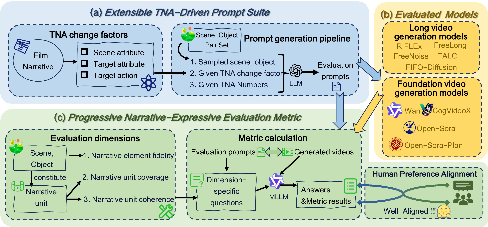

(a) Our prompt suite is inspired by film narrative theory and identifies three key factors influencing Temporal Narrative Atom (TNA) transitions. Based on these, we construct a prompt generation pipeline capable of producing evaluation prompts with flexibly adjustable TNA counts. (b) Our evaluation models include long video generation models and the foundation models they often rely on. (c) Based on the progressive expression of narrative content, we conduct evaluations from three dimensions, employing an MLLM-based question generation and answering framework for calculations. Our metric is well-aligned with human preferences.
